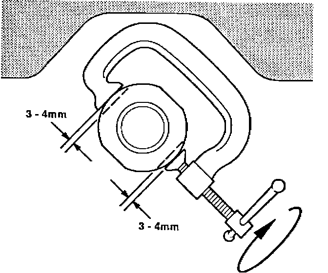
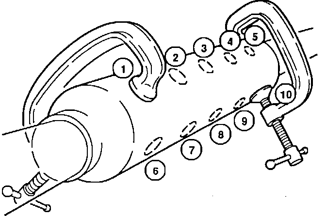

Exhaust System - Rattle
9217acura01
YEAR
1986 - 91
MODEL
INTEGRA
VIN APPLICATION
ALL
February 3, 1992
BULLETIN NO.
92-005
Exhaust System Rattle
SYMPTOM
The exhaust system rattles audibly at certain engine speeds.
PROBABLE CAUSE
Parts of the exhaust system can resonate in certain engine rpm ranges. This can cause the heat shield pieces to vibrate against each other or against the pipe, or cause the resonator to vibrate.
CORRECTIVE ACTION
Replace the Exhaust Pipe B heat shield or shields (depending on year and model) with the new components listed under PARTS INFORMATION. Modify the resonator housing to reduce vibration.
1. Apply rust penetrant to the nuts holding the Exhaust Pipe B heat shield(s).
2. Remove the nuts and bolts, then remove the heat shield(s).
NOTE: Severely rusted bolts may shear off.


3. Use a C-clamp to dimple the resonator housing at ten points as shown. Make each dimple 3-4 mm deep (6-8 mm total across the diameter).
4. Install the new heat shield, replacing the mounting bolts and nuts as needed.
PARTS INFORMATION
Exhaust Pipe B Heat Shield
Year Front Shield Rear Shield
1986-87 (3-dr) 18020-SD2-670 18021-SD2-670
1986-87 (5-dr) N/A 18021-SE7-670
1988-89 18020-SD2-A30 N/A
1990-91 (3-dr.) 18020-SK7-A20 18021-SK7-A20
1990-91 (4-dr.) 18020-SK7-A20 18021-SK8-A20
WARRANTY CLAIM INFORMATION
In warranty: The normal warranty applies.
Out-of-warranty: Any repair performed after warranty expiration may be eligible for goodwill consideration by the District Service Manager. You must request consideration, and get the DSM's decision, before starting work.
Operation number: 311122
Flat rate time. 0.5 hour
Failed P/N: 18020-SK7-A20
Defect code: 045
Contention code: B07